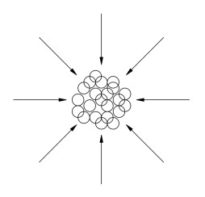
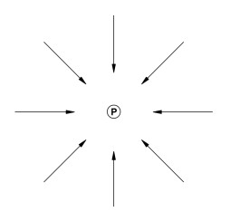

Chapter 5: Energy to Mass Conversion
ENERGY TO MASS CONVERSION
As indicated, a falling body is a transducer and all bodies are falling. Everybody has a value of internal resistance which is inversely proportional to velocity. When a body obtains a velocity of 9 times the speed of light, the internal resistance becomes a negligible factor. The body now accepts greater amounts of energy than it can radiate. This surplus energy now becomes very compact, and the minute bubbles of energy begin to pack together, as shown in figure 24.
Fig. 24
As a result of this compression of bubbles, a particle of mass is formed. Mass is therefore no more than solidified energy. The compression of bubbles illustrated in figure 24 results in a particle, shown below.
Fig. 25
Should a falling body maintain a velocity of between 167,000 and 186,000 miles per second, the conversion from energy to mass would be infinite.
MASS TO ENERGY CONVERSION
As a body obtains the velocity of light, the internal resistance becomes zero. Energy continues to be extracted from the body at an accelerated rate. The velocity of the body is equal to, or greater than the velocity of energy. This means energy cannot overtake (or "catch up with") and enter the body. The great pressure (potential) extracts all the energy from the body. The subatomic particles begin to "shed" their outermost shells (i.e., bubbles), and this process will continue until no particle remains. All that does remain is a vortex of pure (neutral) energy. The conversion of mass to energy is progressive at the rate of the velocity of light squared.
DENSITY OF MASS
The density of a given element is directly related to the motion of that mass. A falling body is a transducer, the energy exchange of that transducer is limited by the internal resistance of that body. The value of that resistance is inversely proportional to the velocity of the body. Therefore, as the velocity of motion decreases, the internal resistance increases, and results in a zero value of energy flow. The body now becomes dormant and lies completely condensed there exists no space, and no life. The force that will give this body life is motion. Should our entire solar system obtain a velocity of zero, it would probably fit into a quart jar.
SUBATOMIC PARTICLES
Minute bubbles of energy, which we call neutral energy, are the building blocks of solid particles. As long as this energy (bubbles) remains at or above the velocity of light, the bubbles remain unattached and independent, however when the leading edge begins to slow, the trailing bubbles begin to collide with the slowed bubbles. This causes the bubbles to pile up and compact, i.e., some bubbles encase other bubbles, as illustrated in figure 26.
![A series of same-size circles are drawn from left to right. Near the left they are evenly spaced, not touching each other. Above them a label is shown: 'above the speed of light'. As the drawn circles progress toward the right the closer they are drawn to each other,. At some point they start touching each other. Then they start overlapping. Above these circles a label appears: 'below the speed of light' .At the far right a fully filled-in, black, circle is shown, with a label 'RESULT: a solid particle'.](./img/fig26.jpg)
Fig. 26
We therefore state that mass is but solidified energy. Subatomic particles vary greatly in size, but they are all created by nature in the same manner, and with the exception of size, weight, and configuration, they are identical. The scientific community speaks of different particles having different charges, but this is a misperception, or more precisely, a problem of misidentification. There are very simple, logical reasons why that which is called an electron has a negative charge, while that which is called a proton has a positive charge, etc., but the explanation is beyond the scope of this paper, and will be discussed in depth in the segment dealing with atomic structure.